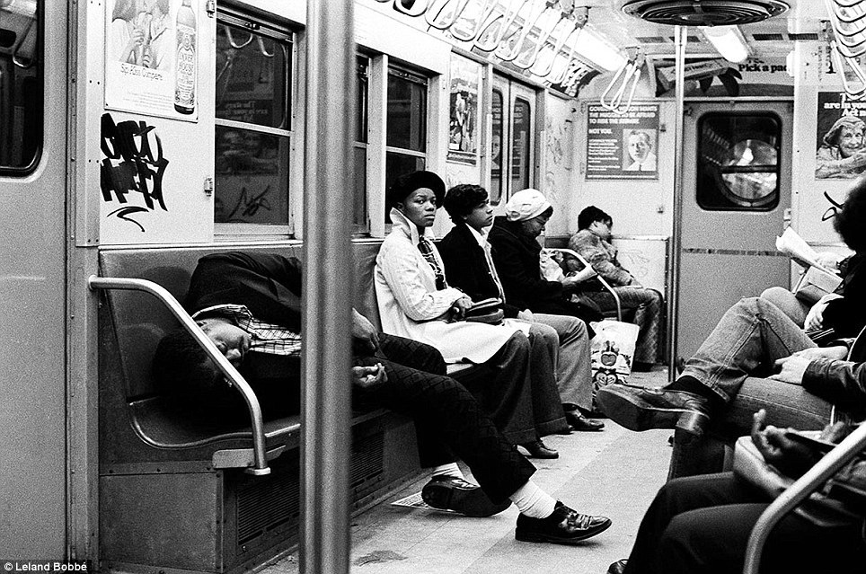

Wrecked.

14th Street and 9th Ave, in the 1980s.
Wrecked.
14th Street and 9th Ave, in the 1980s.
John Paul Jones Park, Bay Ridge Brooklyn, 1980s.

Happy Thanksgiving!
Balloons getting ready to fly, on 77th Street, 1980s.
Trains.

Freedom to write!
Riverside Park, 1980s. It was up for a long time, and was easy to see from the Henry Hudson Parkway.
Times Square, circa 1980

“Stay away from my dog, hippies!”
Protesting something, 1980, 102nd & Broadway.

Madison Ave at East 78th Street, 1971.
Battery Park under construction in 1975

MIdtown, 1970

Heavily bombed.

Beastie Boys
by David LaChapelle
1986

Invaders From Mars - NYC - 1953. Photograph by Frank Larson.
Bleecker and Mulberry, 1983

Worm 2 on the IRT
Orchard Street between Stanton and Rivington, mid 70s
Anonymity makes people say weird things.
Keep pointing that camera at me and see what happens.
40th St & 5th Ave, NYC - 1935
San Francisco? That’s some small town out west, right?
Seriously, no, I don’t. There must be one out there, though. Good luck.

Stranded on the BQE, 1983.

Felix, Felix, Felix

© Steven Siegel, 1980s, New York in the 1980s
“Although New York’s landmarks and neighborhoods are among the most photographed on earth and it seems impossible to get a striking or original image, it’s not,” Mr.Siegel said. “If you’re patient, this ever-changing tapestry is available to you." — Alan Feuer
Find more photos by Steven Siegel here.


Old woman with her boy toy.
Brighton Beach, 1976.
South Bronx, 1980 © Ricky Flores
Delancey Street, looking towards the Williamsburg Bridge, 1975
Nothing to see here.
W. 10th and Washington, 1971

The Ramones ride the subway, 1975

There’s always some asshole passed out on the subway, taking up 4 seats.

PRE (Dondi), 1979
Subway entrance, 1981. Futura 2000 up top; Zephyr down below.

The Love Theater, 42nd Street, 1970s

Central Park West and 86th Street in 1925
At the Central Park Zoo, 1960

1960s Brooklyn (49th and 5th)
Thanks! I aim to please…
Five ways not to get mugged in the subway, 1982. Well, three ways. The other two got ripped off.
Closing up the back cars of the train to keep 1970s people safer at night.

Eigth Avenue in New York, 1985 © Matt Weber

1934 Thanksgiving parade. They had way cooler balloons back then.
I have a shiny token.